20 LITROS
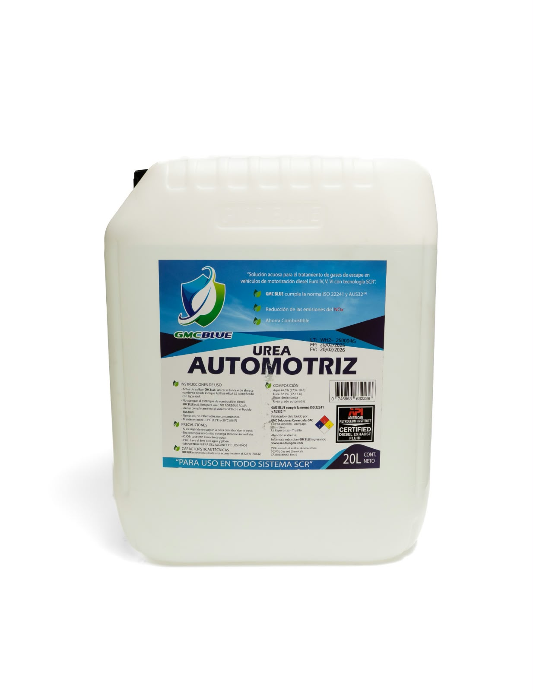
FORMATO INDIVIDUAL
Bidón automotriz
Presentación práctica para abastecimiento y reposición.
Referencia desdeS/ 65.00
por unidad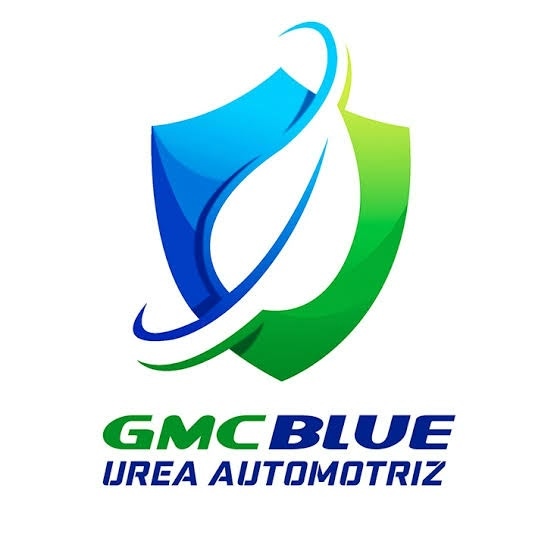
Soluciones de urea automotriz para empresas de transporte, flotas y operaciones que mantienen al país en movimiento.
En GMC BLUE acercamos urea automotriz a quienes necesitan mantener sus operaciones en marcha.
Nuestra propuesta está orientada al sector automotriz y al transporte pesado, con presentaciones para diferentes necesidades de abastecimiento. Conversemos sobre el volumen y formato que requiere tu operación.
Hablemos de tu operación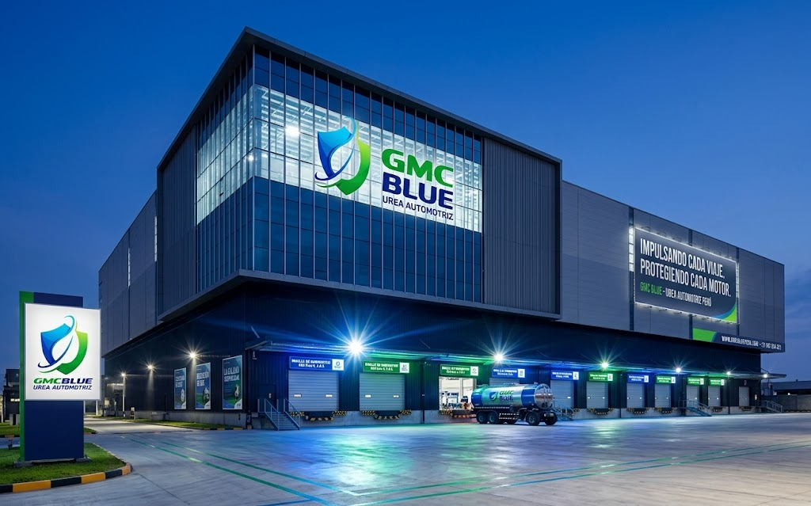
Selecciona un formato y solicita una cotización. Los valores publicados son referencias de mercado en Perú, no una lista comercial confirmada de GMC BLUE.

Presentación práctica para abastecimiento y reposición.
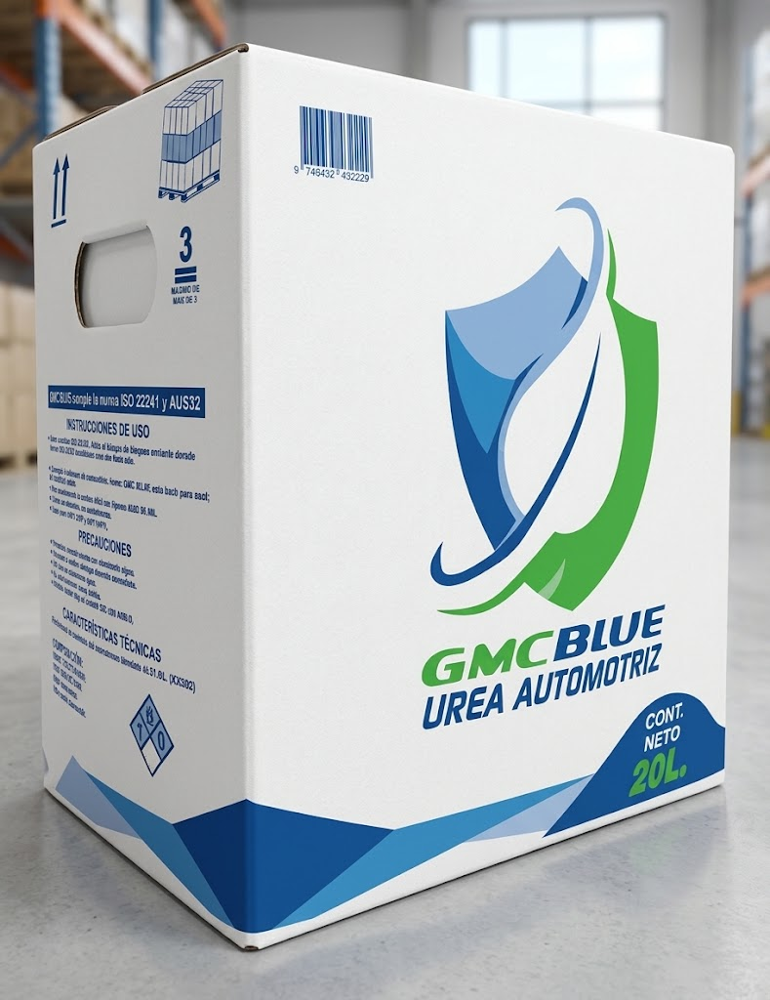
Alternativa compacta para almacenamiento y distribución.
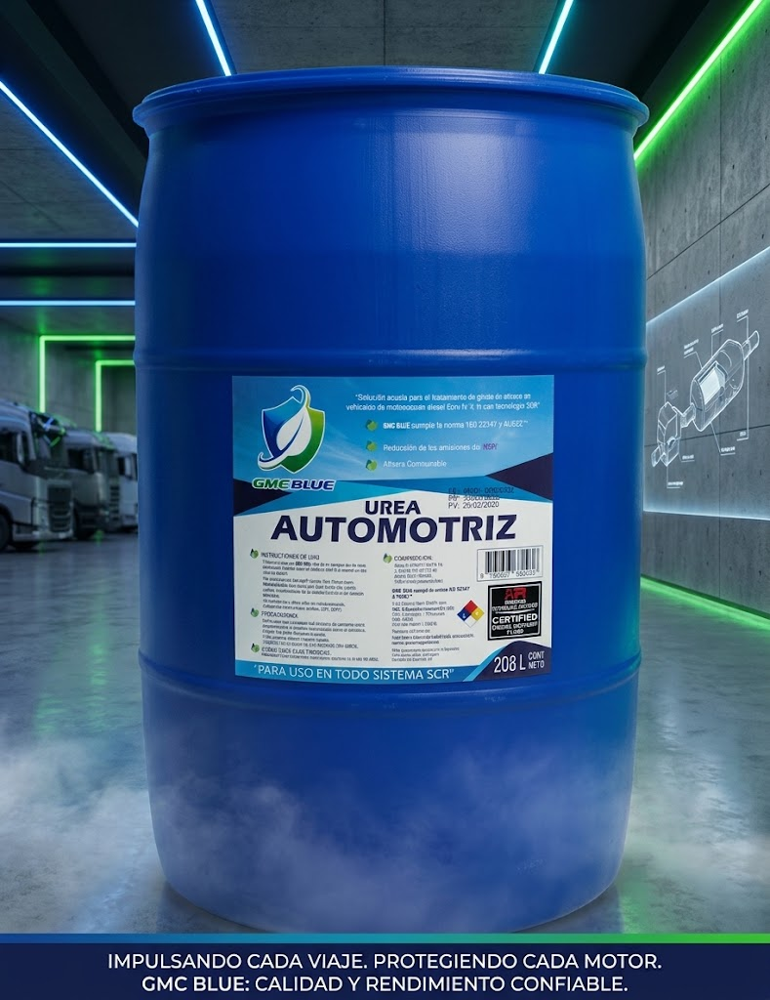
Para operaciones con una demanda de abastecimiento mayor.
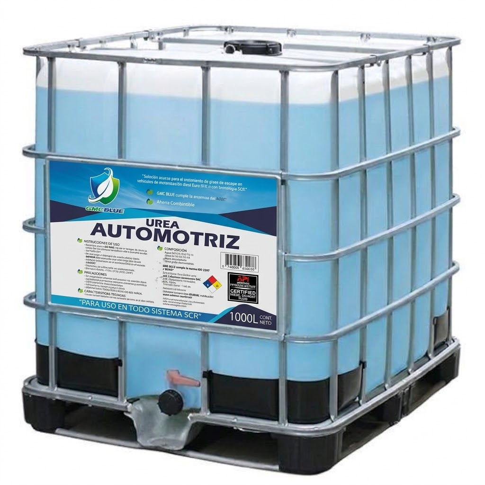
Formato de gran capacidad para flotas y puntos de abastecimiento.
Precios referenciales consultados en oferta pública peruana; pueden variar por proveedor, volumen, IGV, envase y despacho. Confirma el precio final con GMC BLUE antes de publicar o comprar.
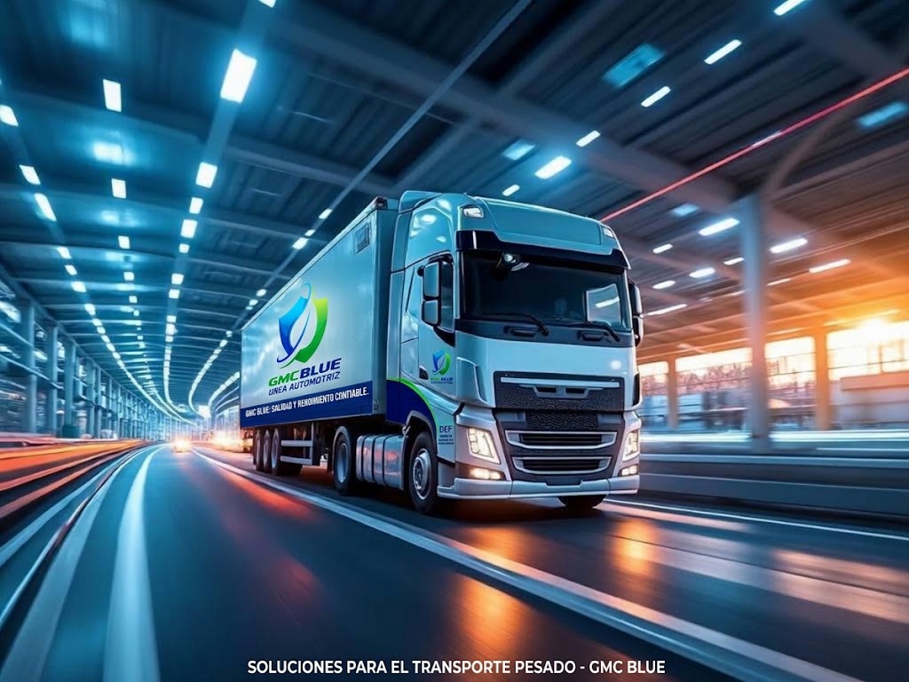
La urea automotriz se utiliza en vehículos diésel equipados con tecnología SCR. GMC BLUE presenta alternativas para las necesidades de abastecimiento del sector transporte.
Imágenes proporcionadas para mostrar las instalaciones, los formatos y los vehículos vinculados a la marca.
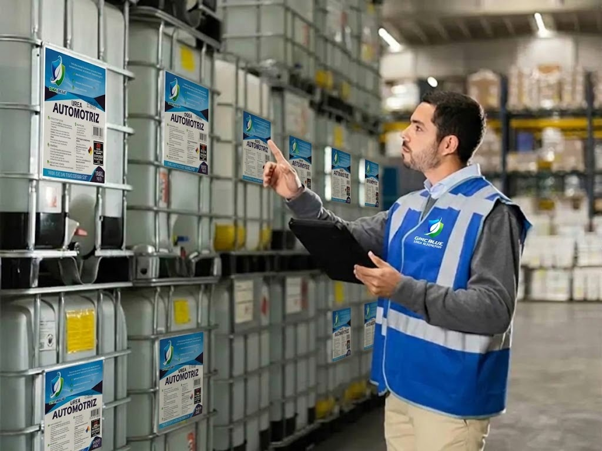
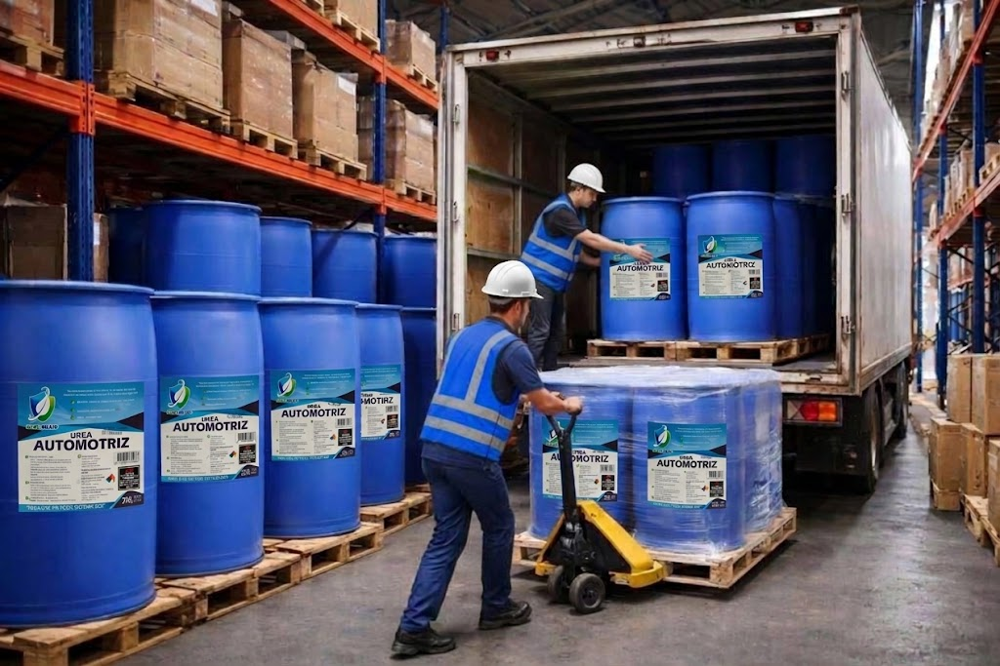
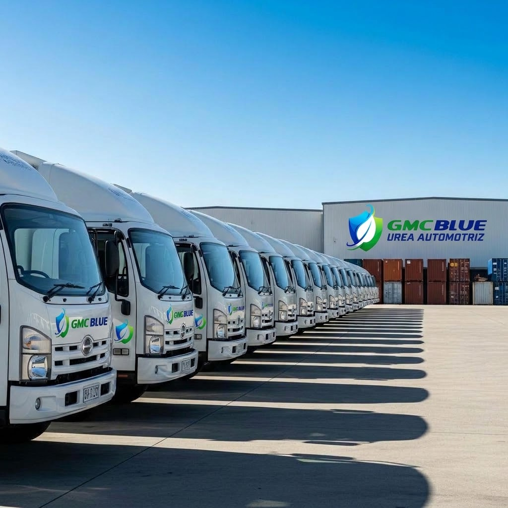
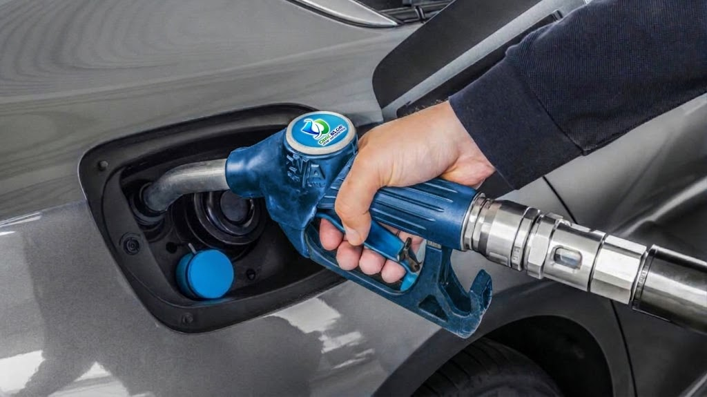
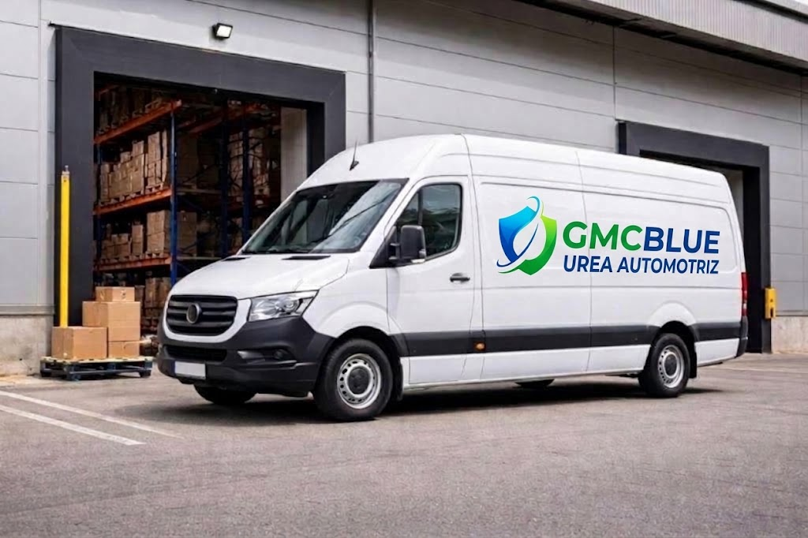
Elige una presentación, indica la cantidad y prepara una solicitud para el equipo comercial de GMC BLUE.
Se abrirá WhatsApp con el detalle de tu solicitud. Podrás elegir el contacto destinatario.
En GMC BLUE creemos en la atención cercana y en construir relaciones comerciales claras. Nuestro equipo está listo para conocer los requerimientos de tu negocio y orientarte en la elección de la presentación adecuada.
Contactar con GMC BLUESolicita información sobre presentaciones, volúmenes y condiciones de entrega.
Iniciar cotización